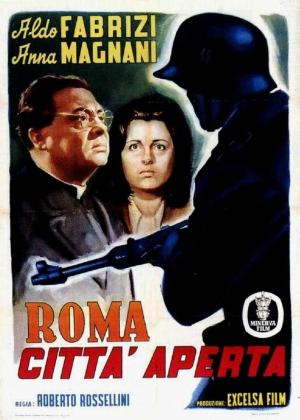

Roma, città aperta

Género
Drama | Bélico | II Guerra Mundial | Neorrealismo | Basado en hechos reales
Sinopsis
Segunda Guerra Mundial. Estando Roma ocupada por los nazis, la temible Gestapo trata de arrestar al ingeniero Manfredi (Marcello Pagliero), un comunista que es el líder del Comité Nacional de Liberación. Pero en la redada Manfredi consigue escapar y pide ayuda a Francesco, un camarada tipógrafo que en unos días se casará con su novia Pina (Anna Magnani), una viuda con un niño. Además el cura de la parroquia, Don Pietro (Aldo Fabrizi), también apoya la causa e intenta ayudar a Manfredi y los partisanos de la resistencia.Link
https://www.youtube.com/watch?v=PxzBKEAAYQon